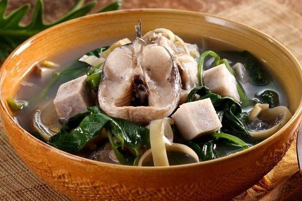

Makanan Khas Samarinda
Nasi Kuning Samarinda
Sambal Raja

Sayur asam kutai menjadi sayur asam khas Samarinda yang berbeda dari sayur asam kebanyakan.
Hal ini dikarenakan bahan utama dan bumbu yang digunakan juga berbeda dengan sayur asem lainnya.
Sayur asam kutai dibuat dari bahan dasar kepala ikan gabus. Lalu, diberikan perasan jeruk nipis
dan dicuci hingga bersih.Selanjutnya ikan gabus akan dimasak dengan kangkung, talas, jantung
pisang batu, dan pastinya rempah-rempah.Rasanya terbilang sangat segar dengan rasa ikan gabus
yang dominan.
Sayur Asam Kutai

Nasi Bekepor
Kerupuk Amplang
Bobongko
Kue Gegincak
Rabo Ruan
Roti Pisang
Sate Payau
Pepes Kepiting